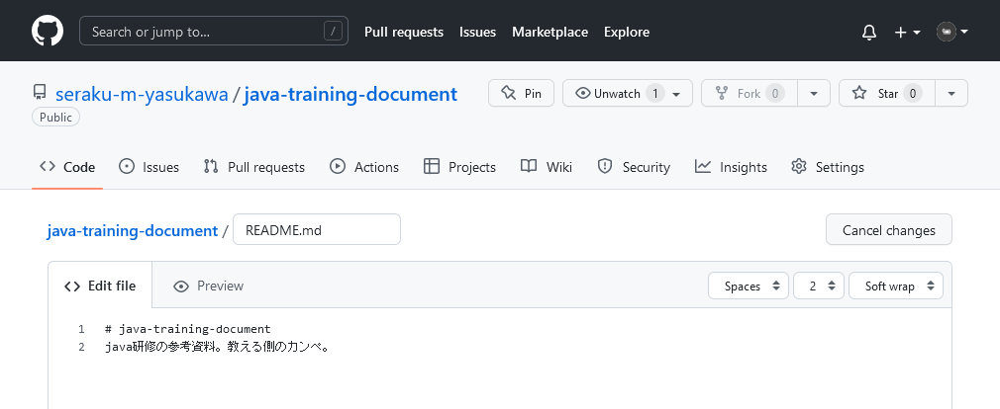
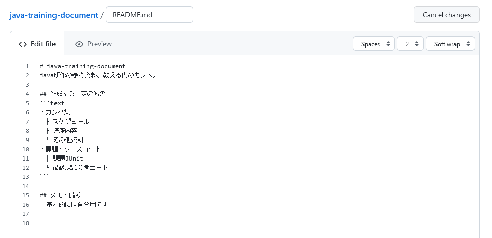
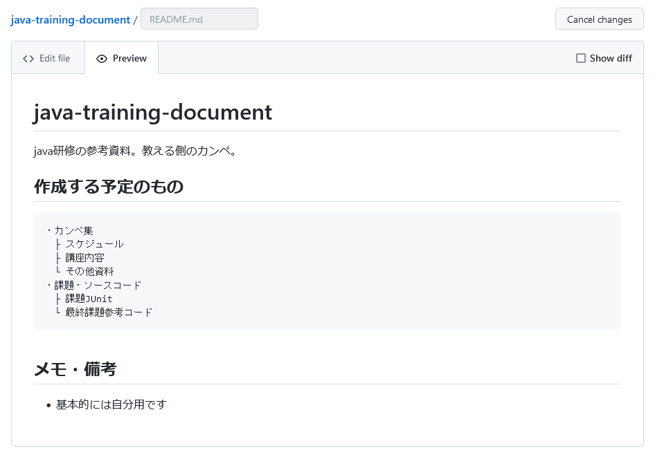
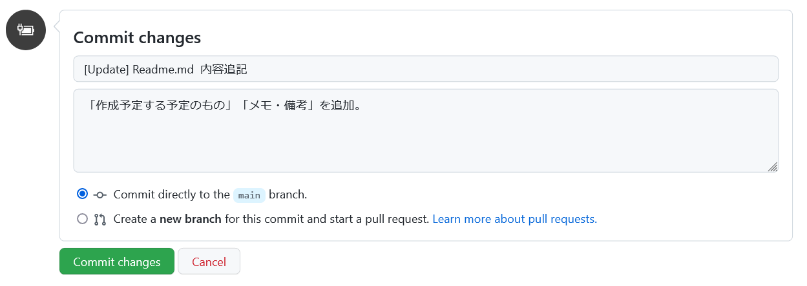
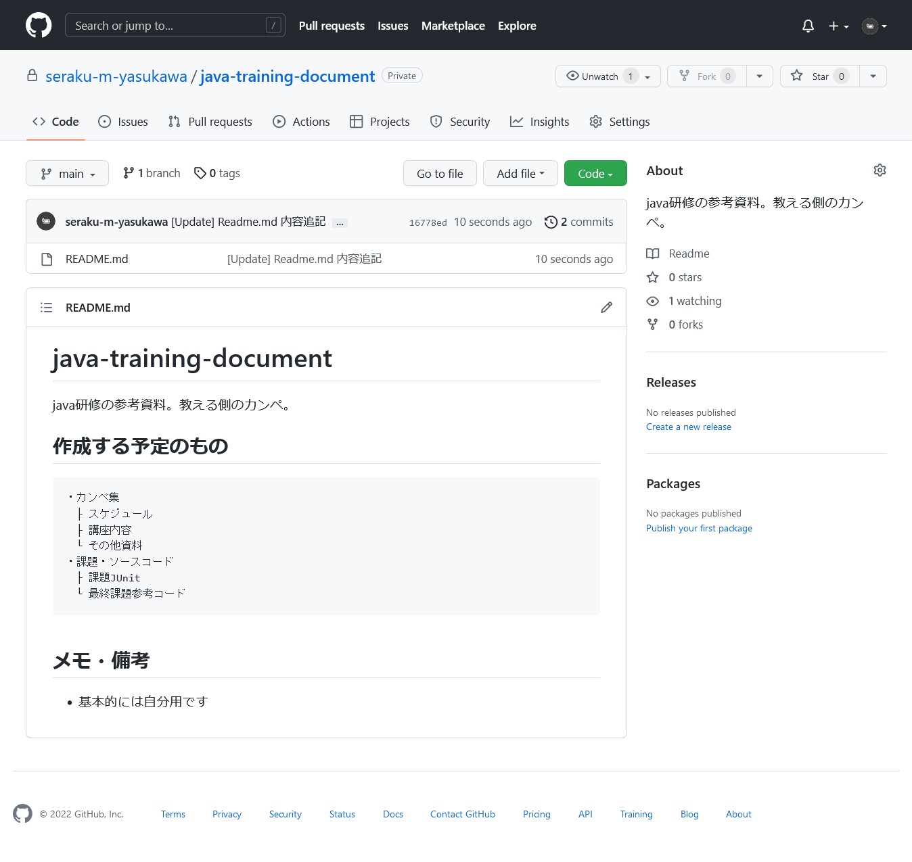
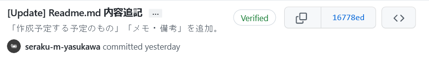

READMEに追記し、コミットする。
TODO:誰かがわかりやすい説明を記述する。
READMEの右上あたりのEditボタン（鉛筆マーク）をクリックする。
するとこんなページに遷移する。

md記法で書き込む。解説が必要なら別途。

タブのPreviewを選択すると、書いたmdのレビューができる。編集終える前に一度確認しておくべき。

画面下のほうにCommit changesが表示されているので、ここにコミットの内容を記載する。
一番上の欄（Create README.md）
コミット内容の概要？何をしたかを記述する。
現場によって書き方は変わるけど、先頭にコミットの種別、その次に概要を記述することが多いと思う。
2つめの欄 (Add an optional~)
コミット内容の詳細。概要レベルで把握できるなら書かなかったり。
Commit directly~ / Create a new Branch~
直接mainブランチにコミットするか、新しくブランチをきってプルリクエストを投げるか。
ブランチ・プルリクエストについては別途。
コミットメッセージの例としてはこんな感じ。

これでCommit changesをクリックすればコミットされる。
これで完成。READMEの内容が変更された。

コミット内容は右上の時計っぽいボタンから確認できる。
さっきのコミットメッセージはこんな感じ。
